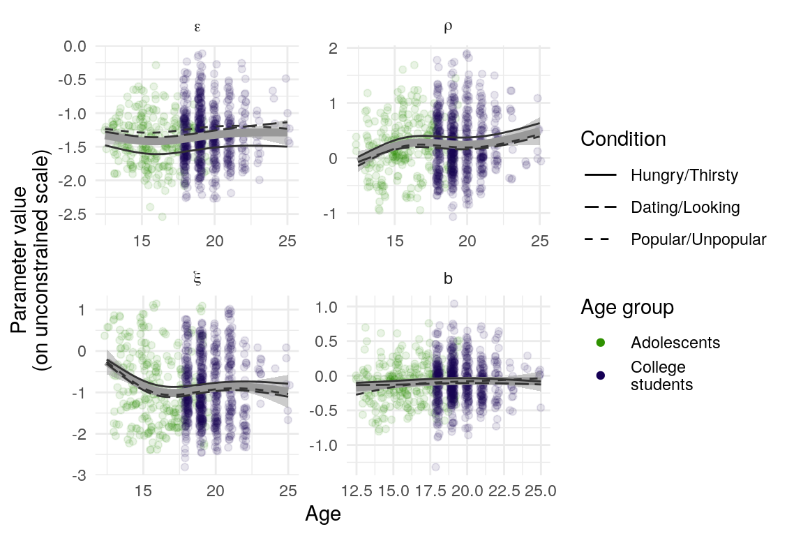
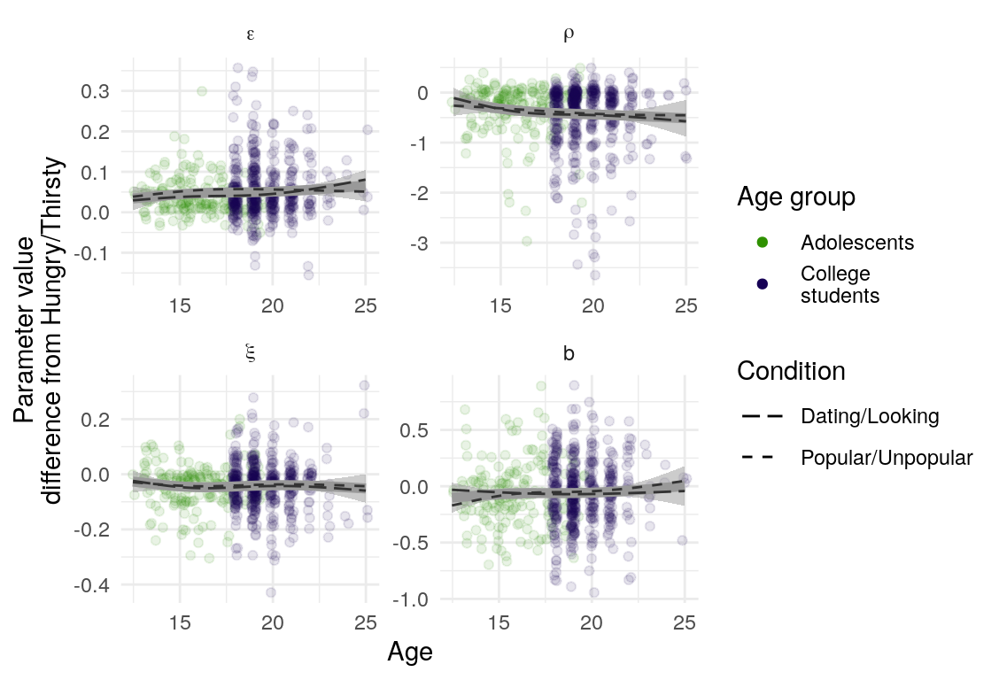
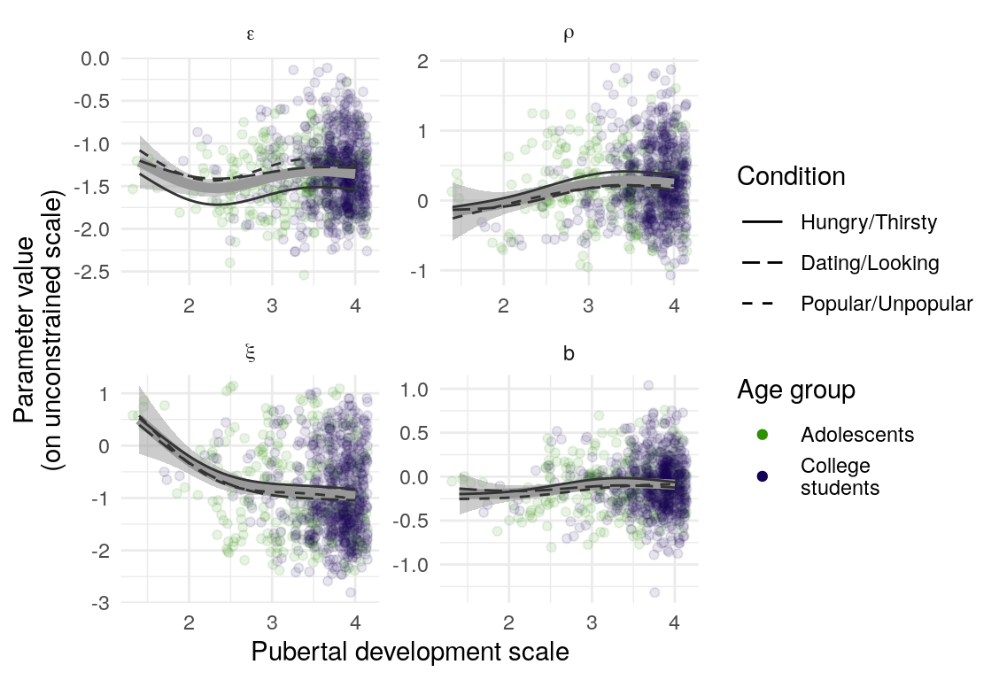
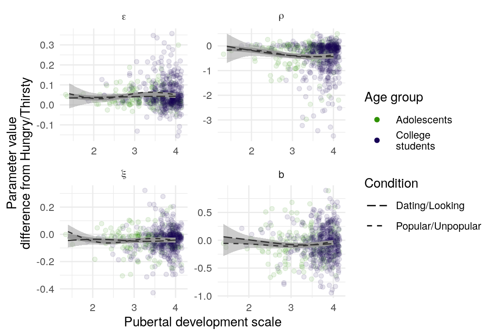

age-learning-association.RmdOne participant, age 42 years, was excluded from the following analysis given the extreme difference in age.




| Parameter | Age-group | \(\beta\) | \(\text{SE}_{\beta}\) | \(t\) |
|---|---|---|---|---|
| \(\epsilon\) | Adolescent | -0.08 | 0.09 | -0.90 |
| \(\epsilon\) | College | 0.05 | 0.06 | 0.89 |
| \(\epsilon\) | All | 0.08 | 0.05 | 1.69 |
| \(\rho\) | Adolescent | 0.14 | 0.10 | 1.35 |
| \(\rho\) | College | 0.04 | 0.06 | 0.60 |
| \(\rho\) | All | 0.08 | 0.05 | 1.44 |
| \(\xi\) | Adolescent | -0.19 | 0.10 | -1.83 |
| \(\xi\) | College | 0.02 | 0.06 | 0.35 |
| \(\xi\) | All | -0.05 | 0.05 | -0.92 |
| \(b\) | Adolescent | 0.10 | 0.09 | 1.21 |
| \(b\) | College | 0.01 | 0.06 | 0.26 |
| \(b\) | All | 0.06 | 0.05 | 1.35 |
| Parameter | Age-group | \(\beta\) | \(\text{SE}_{\beta}\) | \(t\) |
|---|---|---|---|---|
| \(\epsilon\) | Adolescent | -0.13 | 0.08 | -1.59 |
| \(\epsilon\) | College | 0.01 | 0.06 | 0.15 |
| \(\epsilon\) | All | 0.06 | 0.05 | 1.26 |
| \(\rho\) | Adolescent | -0.06 | 0.10 | -0.59 |
| \(\rho\) | College | -0.02 | 0.07 | -0.27 |
| \(\rho\) | All | -0.09 | 0.05 | -1.60 |
| \(\xi\) | Adolescent | -0.01 | 0.10 | -0.05 |
| \(\xi\) | College | -0.03 | 0.06 | -0.45 |
| \(\xi\) | All | 0.00 | 0.05 | 0.05 |
| \(b\) | Adolescent | 0.03 | 0.09 | 0.33 |
| \(b\) | College | 0.03 | 0.06 | 0.50 |
| \(b\) | All | 0.04 | 0.05 | 0.71 |
| Parameter | Age-group | \(\beta\) | \(\text{SE}_{\beta}\) | \(t\) |
|---|---|---|---|---|
| \(\epsilon\) | Adolescent | 0.09 | 0.09 | 0.95 |
| \(\epsilon\) | College | 0.00 | 0.06 | 0.00 |
| \(\epsilon\) | All | 0.07 | 0.05 | 1.46 |
| \(\rho\) | Adolescent | 0.03 | 0.10 | 0.32 |
| \(\rho\) | College | 0.10 | 0.06 | 1.56 |
| \(\rho\) | All | 0.08 | 0.05 | 1.50 |
| \(\xi\) | Adolescent | -0.21 | 0.10 | -2.10 |
| \(\xi\) | College | -0.10 | 0.07 | -1.50 |
| \(\xi\) | All | -0.14 | 0.06 | -2.55 |
| \(b\) | Adolescent | 0.11 | 0.09 | 1.26 |
| \(b\) | College | -0.01 | 0.06 | -0.10 |
| \(b\) | All | 0.05 | 0.05 | 1.12 |
| Parameter | Age-group | \(\beta\) | \(\text{SE}_{\beta}\) | \(t\) |
|---|---|---|---|---|
| \(\epsilon\) | Adolescent | 0.00 | 0.09 | -0.04 |
| \(\epsilon\) | College | -0.03 | 0.06 | -0.57 |
| \(\epsilon\) | All | 0.02 | 0.05 | 0.48 |
| \(\rho\) | Adolescent | 0.01 | 0.10 | 0.09 |
| \(\rho\) | College | -0.04 | 0.07 | -0.54 |
| \(\rho\) | All | -0.06 | 0.06 | -1.01 |
| \(\xi\) | Adolescent | -0.07 | 0.10 | -0.74 |
| \(\xi\) | College | 0.04 | 0.06 | 0.72 |
| \(\xi\) | All | 0.01 | 0.05 | 0.12 |
| \(b\) | Adolescent | 0.04 | 0.09 | 0.39 |
| \(b\) | College | 0.01 | 0.06 | 0.18 |
| \(b\) | All | 0.03 | 0.05 | 0.50 |
To make a preliminary assessment of the relation of developmental variables to motivational framing’s potentiation of learning, I examine covariation of the learning rate, \(\epsilon\) (in each condition, as well as differences between the two motive-relevant conditions and the more neutral condition), with age and puberty as measured by the PDS (Petersen, Crockett, Richards, & Boxer, 1988). First, I examine plots of the central tendency of these parameters against the two developmental variables (separated by gender for PDS). I use the transformed mean of the poster samples of each individual’s parameter for each condition, k, \(\text{pnorm}(\beta_{\epsilon k})\). The differences are calculated on the transformed scale.
Second, for each draw from the posterior, I regress the vector of individually varying \(\beta_{\epsilon k}\) on the development variable, controlling for gender. Gender is centered, such that the value of the intercept is the average parameter across males and females (which are unbalanced in the sample). I examine the distribution of parameter estimates from these regressions to describe any systematic relations that are not large enough to be obvious in the scatterplots. (This method is an ad hoc approximation to incorporating these paramters into the full model, and is merely an interim analysis while I solve other modeling problems).
Descriptive plots suggestion little or not relation between development and model parameter posterior distributions of the \(\beta_{\epsilon k}\) parameters, or their contrasts (Figure ??).
The results from the linear models confirm that the linear relation between age and all \(\beta_{\epsilon k}\) parameters and their contrasts are centered around 0 (Figure ??).
The results from the linear models confirm that the linear relation between pubert and all \(\beta_{\epsilon k}\) parameters and their contrasts are centered around 0 (Figure ??). However, there is some indication that the relation between the learning rate parameters and PDS differs by gender such that boys show more positive covariance between PDS and learning rate (Table ??). These results do seem to capture something about the smooth lines in Figure ??, though if the interaction were to take on any of the values in a considerable portion of the posterior density, this result would be reversed.
Petersen, A. C., Crockett, L., Richards, M., & Boxer, A. (1988). A self-report measure of pubertal status: Reliability, validity, and initial norms. Journal of Youth and Adolescence, 17(2), 117–133. doi:10.1007/BF01537962